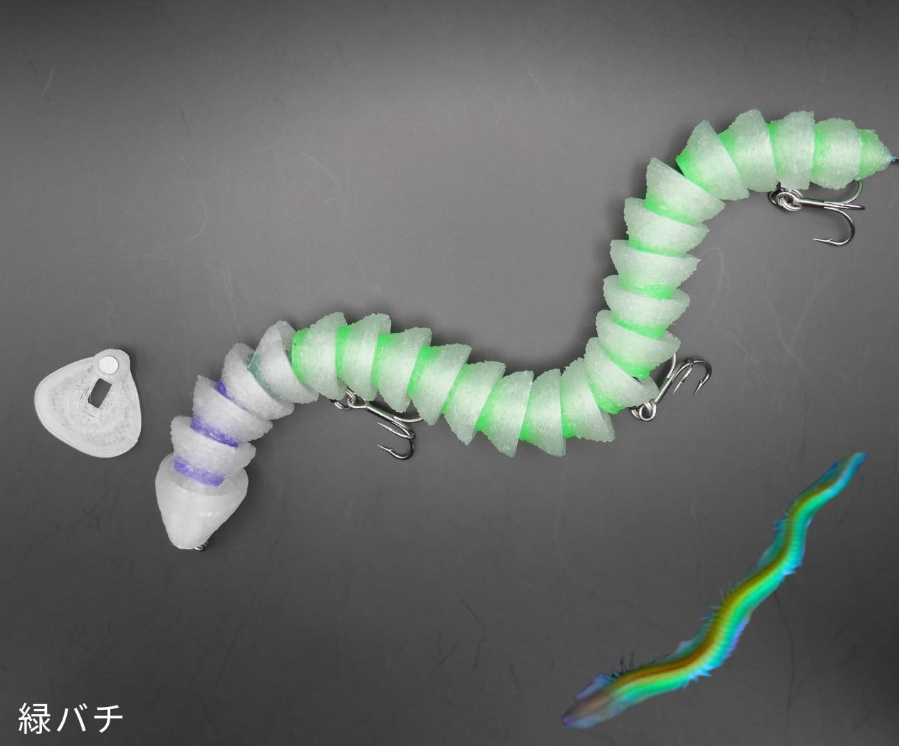
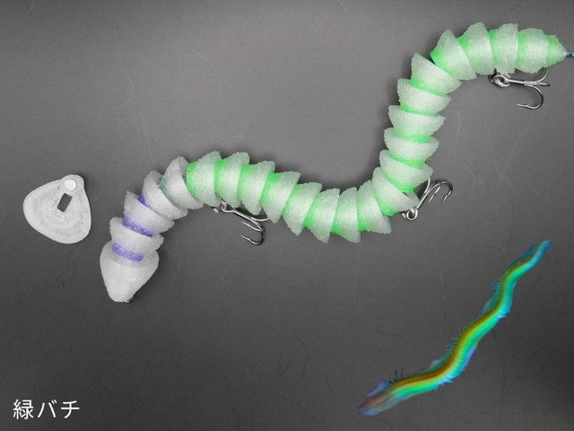
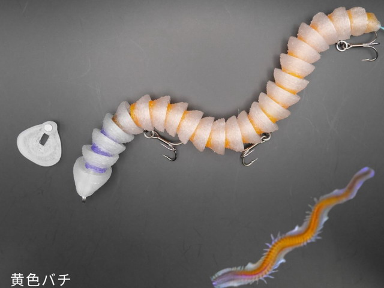
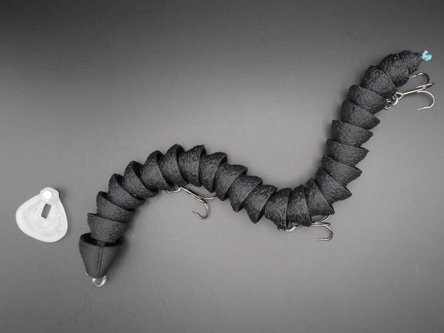
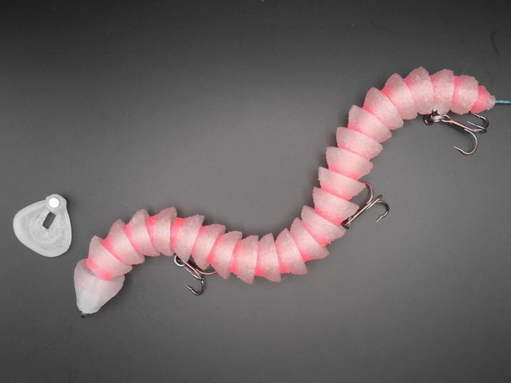

Hedisite Flex 160
Hedisite Flex 160はMi3のスローシンキングペンシルです。
デッドスローでのアクションと浮き上がりやすさを実現し、バチの遊泳レンジをバチに紛れてデッドスローでアプローチ。

スペック
- メーカー
- Mi3
- 長さ
- 160 mm
- 重さ
- 11 g
- フック
- #10×3
- レンジ
- 表層
- タイプ
- シンキングペンシル
- 沈下タイプ
- スローシンキング
- アクション
- スネイクアクション
- ターゲット
- シーバス
- 価格
- 3600円(税込)
- 発売日
- 2026-01-19
ヘディサイトフレックス160の特徴
バチよりも目立つバチ！ バチパターンにおける近距離、食わせ特化型。
-
生命感を帯びた”柔軟”なアクション
連結パーツを用いない多関節構造により、非常に艶めかしくボディーをくねらせアクションします。
-
アクションを変えられる着脱式リップ
扇リップを外せばI字モード。扇リップを付ければ、なまめかしいスネイクアクションに！
ヘディサイトフレックス160の使い方・得意な状況
得意なシーズンは圧倒的にバチ抜けシーズン。
使い方はかなりゆっくり巻くだけ。多関節部分が水を受けてゆらゆら自然とアクションします。
I字モードではレンジキープできるギリギリのデッドスローでリトリーブ。
ワンポイント
苦手なことは、早巻き、飛距離、エビりやすさです。
投げる時にはエビらないように着水時のサミングがオススメ。
扱いやすさを犠牲に生まれた食わせのアクションは一級品です。
人気カラー

緑バチ緑色のバチが多いところに！

黄色バチ黄色系のバチが多いところに最適。

マットブラックシルエットをくっきり見せたいときに。アクションのアピールが少ないヘディサイトとの相性が良いカラー

スパインピンクバチパターンでの定番カラー。水中からはくっきり見える。
画像出典:Mi3公式HP
Mi3のルアー
- ヘディサイト
- ヘディサイトフレックス135スリム